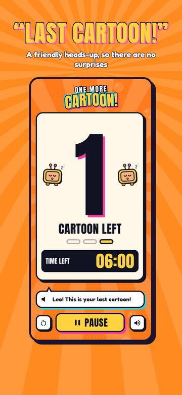

ONE MORE CARTOON!
Der freundliche Countdown, der die Bildschirmzeit ohne Tränen beendet.
Ein Countdown, den Kinder wirklich verstehen
„Nur noch eine Folge!“ Kommt dir bekannt vor? One More Cartoon! macht das Ende der Bildschirmzeit zum Spiel: Statt Minuten sieht dein Kind die Folgen, die noch übrig sind: 3… 2… 1. Eine fröhliche Stimme warnt vor der letzten und sagt dann, was als Nächstes kommt: Baden, Bett, Essen oder rausgehen.
Neu: Geschwister-Modus. Ein Timer für alle Geschwister: Die Stimme ruft jedes Kind beim Namen, und „Wer wählt heute?“ entscheidet reihum, wer die Folgen aussucht.
30 Tage kostenlos · danach ein einziger Kauf, für immer deins · kein Abo, keine Werbung





So funktioniert’s
- Vereinbart, wie viele Folgen. Stell die Gesamtzeit und die Länge einer Folge ein, oder zähl einfach Folgen.
- Der Countdown läuft. Eine große Zahl und zwei tanzende Fernseher zeigen, wie viele noch übrig sind; die Stimme sagt „Noch zwei Folgen!“ und warnt vor der letzten.
- Zum Schluss wird gefeiert. „Ab ins Bett, Emma!“ Ein Comic-Abschlussbild macht den Wechsel zur nächsten Sache zum Spiel, nicht zum Streit.
Warum Eltern es mögen
- Kinder verstehen „noch zwei Folgen“ viel besser als „noch zehn Minuten“.
- Eine freundliche Warnung vor dem Ende, ohne Überraschungen.
- Der Name deines Kindes in den Ansagen, oder die Namen aller mit dem Geschwister-Modus.
- Wer wählt heute? Ein Glücksrad entscheidet, wer die Folgen aussucht, fair und ohne Streit.
- Wähle, was danach kommt: Baden, Bett, Essen, rausgehen oder eine von 40 fertigen Nachrichten, alles mit derselben Stimme.
- 11 Sprachen, iPhone und iPad, Hoch- und Querformat, der Bildschirm bleibt an.
- Keine Werbung, kein Konto, kein Tracking: Alles bleibt auf deinem Gerät.
Du möchtest Tipps? Lies unseren Elternratgeber (auf Englisch).
Fragen von Eltern
Für welches Alter ist es?
Für kleine Kinder von etwa 2 bis 7 Jahren, die noch keine Uhr lesen, aber Folgen zählen können. Die Eltern stellen alles ein; das Kind schaut nur den Countdown.
Warum Folgen statt Minuten zählen?
Kleine Kinder haben kein Zeitgefühl: „noch zehn Minuten“ bedeutet nichts, aber „noch zwei Folgen“ sehen sie kommen und akzeptieren es.
Was kostet es? Gibt es ein Abo?
Der Download ist kostenlos und alles ist 30 Tage gratis. Danach schaltet ein einziger Kauf es für immer frei. Kein Abo, keine Werbung.
Funktioniert es mit YouTube, Netflix oder dem Fernseher?
Ja. Die App steuert keine anderen Apps und keinen Fernseher: Sie läuft neben dem, was dein Kind schaut, auf einem Handy oder Tablet in der Nähe.
Sammelt die App Daten über mein Kind?
Nein. Kein Konto, keine Werbung, keine Statistiken, kein Tracking. Einstellungen und Namen bleiben auf deinem Gerät.
Gibt es eine Android-Version?
Die Android-Version wird gerade bei Google Play getestet und kommt bald.